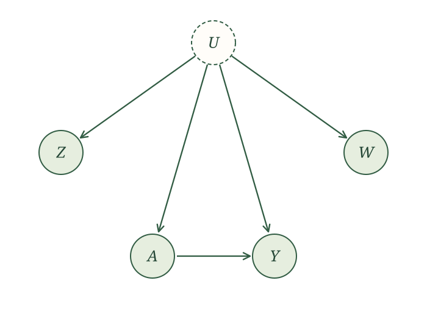

Other approaches
We plan to develop proxy-variable and control-function approaches to unmeasured confounding. The proxy-variable material below is retained from the earlier GitBook and has been adapted to the format of this text. This section is supplementary reading rather than a scheduled lecture.
Control functions
[Planned: introduce control functions through a worked example, then describe the additional assumptions they require. The earlier GitBook contained only a heading for this topic.]
Proxy variables
A proxy provides information about a variable we do not observe directly. In some settings, two proxies for an unmeasured confounder can help identify \(E[Y(a)]\). We need restrictions on how the proxies are generated and enough information in their relationship; simply measuring two related variables is not sufficient (Kuroki and Pearl 2014; Miao, Geng, and Tchetgen Tchetgen 2018).
Information about underlying health
Return to confounding by indication. A physician sees aspects of a patient’s underlying health that influence both treatment and outcome, but are missing from our data. What measurements might give us information about that unmeasured health?
Vital signs, laboratory results, and imaging findings are possible candidates. Which measurements can serve as proxies depends on their causal relationships with treatment, outcome, and the unmeasured health characteristics.
For a simple setup, suppose the unmeasured variable \(U\) influences two observed proxies, \(Z\) and \(W\), as well as treatment \(A\) and outcome \(Y\). The proxies have no additional causes shared with each other, treatment, or outcome. The corresponding causal graph is

If we observed \(U\), our usual adjustment argument would give
\[ E[Y(a)]=E\big[E[Y\mid U,A=a]\big], \]
when the conditional expectations are defined. We will use the proxy relationships to remove \(U\) from that expression.
For this finite-variable example, assume \(U\), \(Z\), and \(W\) each have \(k\) possible values, and \(Y\) has finitely many values. Then
\[ \begin{aligned} E[Y(a)]&=\sum_y y\,P(Y(a)=y),\\[0.4em] P(Y(a)=y)&=\sum_u P(Y=y\mid U=u,A=a)P(U=u). \end{aligned} \]
The graph gives two useful applications of the law of iterated expectations:
\[ \begin{aligned} &P(W=w\mid Z=z,A=a)\\ &\quad=\sum_u P(W=w\mid U=u)\\ &\qquad\qquad\times P(U=u\mid Z=z,A=a), \end{aligned} \]
and
\[ \begin{aligned} &P(Y=y\mid Z=z,A=a)\\ &\quad=\sum_u P(Y=y\mid U=u,A=a)\\ &\qquad\qquad\times P(U=u\mid Z=z,A=a). \end{aligned} \]
Both expressions use the same conditional distribution of \(U\) given \(Z\) and \(A\). We can combine them using matrix algebra. Define the \(k\)-by-\(k\) matrix \(B_a\) by
\[ (B_a)_{wz}=P(W=w\mid Z=z,A=a). \]
If \(B_a\) is invertible, the resulting identification formula is
\[ \begin{aligned} P(Y(a)=y) &=\sum_{z,w}P(Y=y\mid Z=z,A=a)\\ &\qquad\times(B_a^{-1})_{zw}\,P(W=w). \end{aligned} \]
Every quantity on the right involves observed variables. The invertibility condition supplies the extra restriction needed for this calculation (Miao, Geng, and Tchetgen Tchetgen 2018).
Define four matrices:
\[ \begin{aligned} C_{wu}&=P(W=w\mid U=u),\\ (D_a)_{uz}&=P(U=u\mid Z=z,A=a),\\ (E_a)_{yz}&=P(Y=y\mid Z=z,A=a),\\ (F_a)_{yu}&=P(Y=y\mid U=u,A=a). \end{aligned} \]
The two iterated-expectation identities become
\[ B_a=CD_a,\qquad E_a=F_aD_a. \]
Because \(B_a\) is invertible and \(C\) and \(D_a\) are square, both factors are invertible. Therefore,
\[ F_a=E_aD_a^{-1}=E_aB_a^{-1}C. \]
Let \(p_U\) and \(p_W\) be the column vectors of marginal probabilities for \(U\) and \(W\). Since \(p_W=Cp_U\),
\[ F_ap_U=E_aB_a^{-1}Cp_U=E_aB_a^{-1}p_W. \]
The left side gives the intervention probabilities \(P(Y(a)=y)\). Reading off row \(y\) on the right gives the identification formula above.
Binary proxies
Suppose \(U\), \(Z\), \(W\), and \(Y\) are all binary. How does the matrix formula simplify?
Because \(Y\) is binary, \(E[Y(a)]=P(Y(a)=1)\). To keep the calculation readable, write
\[ \begin{aligned} q_z&=P(W=1\mid Z=z,A=a),\\ r_z&=P(Y=1\mid Z=z,A=a),\\ p&=P(W=1). \end{aligned} \]
The first two quantities depend on the chosen treatment value \(a\); \(p\) is the marginal probability of \(W=1\). Then
\[ B_a= \begin{bmatrix} 1-q_0&1-q_1\\ q_0&q_1 \end{bmatrix}, \]
with determinant \(q_1-q_0\). If \(q_1\ne q_0\), its inverse is
\[ B_a^{-1}= \frac{1}{q_1-q_0} \begin{bmatrix} q_1&q_1-1\\ -q_0&1-q_0 \end{bmatrix}. \]
Substituting into the identification formula gives
\[ \begin{aligned} E[Y(a)] &=r_0\frac{q_1-p}{q_1-q_0}\\[0.4em] &\quad+r_1\frac{p-q_0}{q_1-q_0}. \end{aligned} \]
The calculation requires the proxies to remain associated within treatment groups: \(q_1\) and \(q_0\) must differ. When they are close, the small denominator can also make estimation unstable.